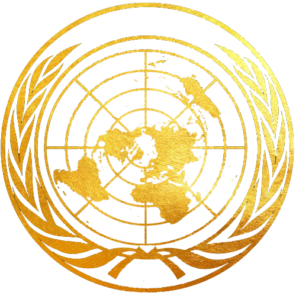

United Nations Security Council
Fraught with fear, transposing fidelities and allegiances, and a second Arab Spring, the world faces a cataclysmic crisis that threatens to annihilate the Middle East, further leading to a global apocalypse.
The UNSC must tackle the issues of (il)legitimate governments killing and torturing their own people, human rights violations, starvation, rebellions in countries and determine its course of action to restore stability to the most volatile (and resourceful) region in the world.
The Security Council must safeguard the sovereignty of legitimate member states, but also bring about cooperation between member states to do so. It is the task of the United Nations Security Council to live up to its name- to be united as a body and maintain peace in the world - no matter what the cost may be.
At this time of erratic and unstable governments and proliferation of arms,the already waning and diminishing power and clout of the UNSC is at its lowest. The Security Council must go beyond passing (mostly failing) pieces of paper that are not implemented; it must not ignore the calls of civilians for change of government, it must not tolerate the rearmament of a volatile region, oppression and extremism. For, its failed predecessor fell prey to much of the same issues of a volatile Europe.
It is now time for the UNSC to act, be proactive and re-establish significance in a jingoistic world.
Winter is coming, and it heralds a Cold War. It is up to us, the premier diplomats of the world, to ensure that spring is not far behind.
Study Guide